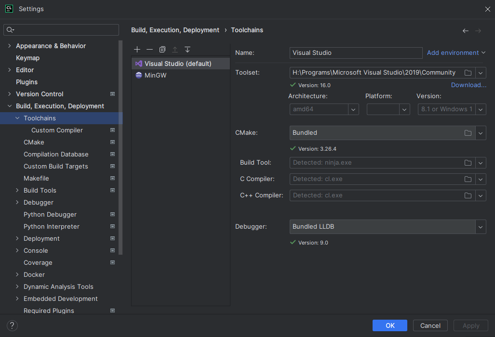
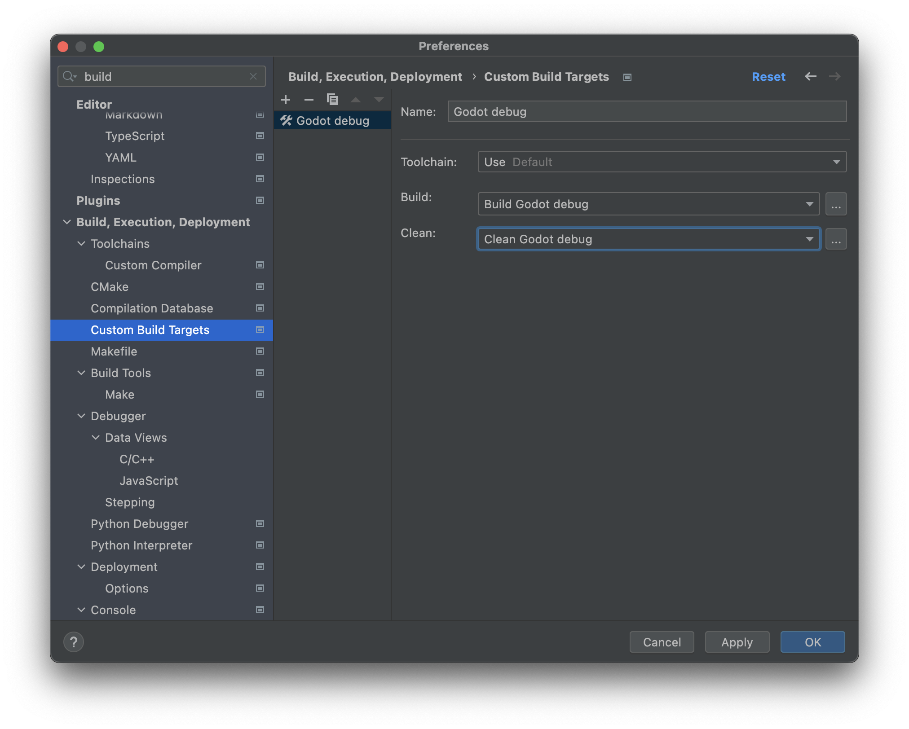
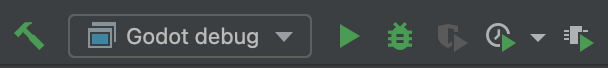
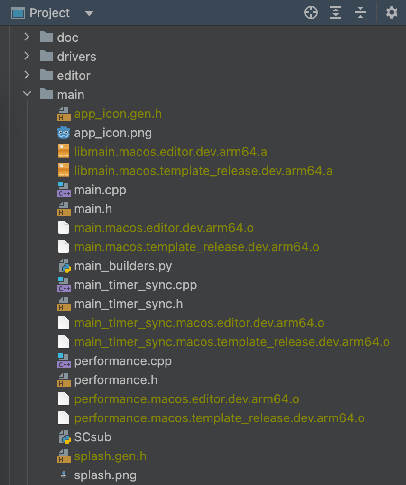

CLion
CLion is a JetBrains IDE for C++ that's free for individual, non-commercial development.
Importing the project
CLion can import a project's compilation database file, commonly named compile_commands.json. To generate the compilation database file, open the terminal, change to the Godot root directory, and run:
scons compiledb=yes compile_commands.json
Then, open the Godot root directory with CLion and wait for the project to be fully
indexed. If code completion, parameter information, or refactoring are not enabled,
you will need to load the project with CMake. To do this, find the CMakeLists.txt
file in the platform\android\java\nativeSrcsConfigs directory, right click and
select . Once the project reloads, a godot build configuration
will be added. This configuration can be safely deleted as the CMake file will not
build the project and only exists for loading the project in JetBrains IDEs.
Note
Windows Users:
For
compile_commands.jsonto load correctly in CLion, you must first have the Visual Studio toolchain configured for CLion.
Navigate to Settings > Build, Execution, Deployment > Toolchains
Click the + button and select
Visual StudioCLion will attempt to detect your Visual Studio installation. If it is unsuccessful, use the file icon to the right of
Toolset:to select the directory with your Visual Studio installation.You may exit and reload CLion and it will reload
compile_commands.json

Compiling and debugging the project
CLion does not support compiling and debugging Godot via SCons out of the box. This can be achieved by creating a custom build target and run configuration in CLion. Before creating a custom build target, you must compile Godot once on the command line, to generate the Godot executable. Open the terminal, change into the Godot root directory, and execute:
scons dev_build=yes
To add a custom build target that invokes SCons for compilation:
Open CLion and navigate to Settings > Build, Execution, Deployment > Custom Build Targets

Click Add target and give the target a name, e.g.
Godot debug.

Click ... next to the Build: selectbox, then click the + button in the External Tools dialog to add a new external tool.

Give the tool a name, e.g.
Build Godot debug, set Program toscons, set Arguments to the compilation settings you want (see compiling Godot), and set the Working directory to$ProjectFileDir$, which equals the Godot root directory. Click OK to create the tool.Note
CLion does not expand shell commands like
scons -j$(nproc). Use concrete values instead, e.g.scons -j8.

Back in the External Tools dialog, click the + again to add a second external tool for cleaning the Godot build via SCons. Give the tool a name, e.g.
Clean Godot debug, set Program toscons, set Arguments to-c(which will clean the build), and set the Working directory to$ProjectFileDir$. Click OK to create the tool.

Close the External Tools dialog. In the Custom Build Target dialog for the custom
Godot debugbuild target, select the Build Godot debug tool from the Build select box, and select the Clean Godot debug tool from the Clean select box. Click OK to create the custom build target.

In the main IDE window, click Add Configuration.

In the Run/Debug Configuration dialog, click Add new..., then select Custom Build Application to create a new custom run/debug configuration.

Give the run/debug configuration a name, e.g.
Godot debug, select theGodot debugcustom build target as the Target. Select the Godot executable in thebin/folder as the Executable, and set the Program arguments to--editor --path path-to-your-project/, wherepath-to-your-project/should be a path pointing to an existing Godot project. If you omit the--pathargument, you will only be able to debug the Godot Project Manager window. Click OK to create the run/debug configuration.

You can now build, run, debug, profile, and Valgrind check the Godot editor via the run configuration.

When playing a scene, the Godot editor will spawn a separate process. You can debug this process in CLion by going to Run > Attach to process..., typing godot, and selecting the Godot process with the highest pid (process ID), which will usually be the running project.
Ignoring object and library files
After building Godot in CLion, you may see the object and library files showing up in the Project view.

You can configure CLion to ignore those files:
Open CLion and navigate to Settings > Editor > File Types > Ignored Files and Folders
Click the + button to add
*.oand*.ato the list. In Windows, you would add*.objand*.dll.

Now, the files should be ignored in the Project view.